附录一 Windows操作系统下搭建Python运行环境¶
本书的所有程序代码均以3.5版的Python解释器为基础，并且在Jupyter Notebook下编写运行。本附录将指导读者在Windows操作系统下搭建本书建议使用的Python解释环境及Jupyter Notebook库，以便读者能更好的学习本书的示例代码、完成相应的练习。
Python语言及其解释器从诞生至今经历了20多年的发展，版本号也从1.0发展到了3.8。这其中以2.7版本为重要分水岭，在此前后Python的语法规则有非常大的变化，2.7主要版本之后的更新直接跳至3.0及以上主要版本。由于历史原因，许多商业程序至今仍按照早期Python语法来编写或者依赖早期版本的Python解释器。当然更多的商业程序或软件是按照3.0及以上版本的语法规则来编写的。本书使用3.5版Python解释器。Python的官方网站 (www.python.org) 详细说明了每一个版本的更新内容，有兴趣的读者可以查阅。
Jupyter Notebook是基于网页的用于交互计算的应用程序，可被应用于全过程计算：开发、文档编写、运行代码和展示结果。具体的说，它是以网页的形式打开，可以在网页页面中直接编写代码和运行代码，代码的运行结果也会直接在代码块下显示的程序。如在编程过程中需要编写说明文档，可在同一个页面中直接编写，便于作及时的说明和解释。
1. 检查计算机有无安装Python解释器及其版本¶
首先需要检查当前计算机上是否安装了Python语言解释器及其版本。通常Windows操作系统并不会默认安装Python语言解释器，但是读者可能曾经主动或被动安装过。以Windows10操作系统为例，打开Windows下的命令行工具，如下图所示。输入命令：
python -V
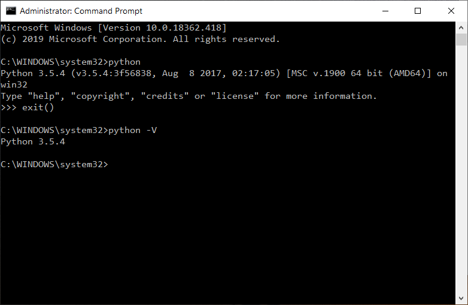
如果计算机上已经正确安装了Python，命令行窗口会输出已安装的版本号，例如：
Python 3.5.4
其中3.5.4就是其版本号。本书建议使用3.5.X版本号，其中X可以是任意可能的数字。本书不建议使用更高级版本的Python解释器，主要是由于本书代码并未在更高版本下测试过，另外本书使用到的一些常用的库并不一定支持更新版本的Python解释器。如果你的计算机在执行上述命令后显示的版本并不是以3.5开头，尤其是以2.7开头时，强烈建议你卸载当前的版本安装3.5版本的Python解释器。
如果执行上述命令显示的是如下图所示的一些信息:

表明你的计算机上并没有安装Python解释器。
在Windows操作系统上卸载旧版本的Python解释器与卸载一般应用程序一样，在此不再赘述。可以通过下列链接下载3.5版本的Python解释器安装程序：(https://www.python.org/downloads/release/python-354/) 。主要版本的Python解释器通常都会提供32位和64位两种安装程序文件，建议选择和计算机操作系统相同位数的版本。右键点击“我的计算机”，选择“属性”来可以查看你的计算机是32位还是64位的系统。如下图系统类别(System type)行所示：

2. 安装Python解释器¶
下载好相应的Python解释器安装程序后，可以双击运行安装，选择“个性化安装”(Customize Installation)，同时勾选中“将Python3.5加入路径”（Add Python3.5 to Path)，如下图所示：
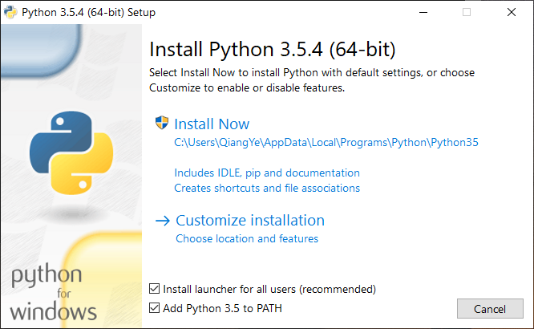
在随后的，安装提示信息中，勾选中所有选项，包括“为本计算机上所有用户安装”（for all users）:
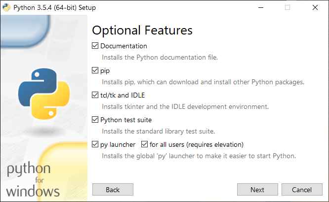
继续选中“为所有用户安装”（install for all users）。其余使用默认配置，跟随安装程序向导完成安装。
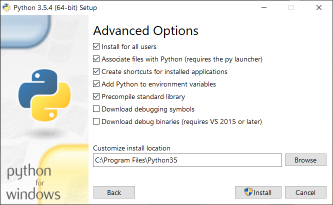
当下图出现，即表明Python解释器已顺利安装完成。关闭该窗口。
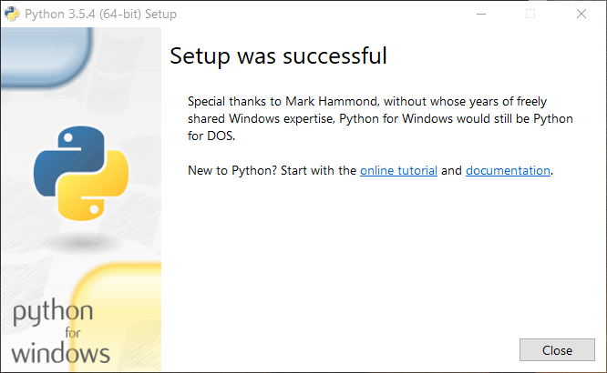
完成安装后，再次打开命令行工具，按照前文的描述确认符合要求版本的Python已经安装。到此，你的电脑已经具备了执行Python程序的能力了。可以重新启动计算机。
3. 安装虚拟环境¶
本步骤虽不是必需，且对初学者也不是很容易理解，虽然可以直接跳过本步骤跟随下一步骤安装“jupyter notebook”，但仍然强烈建议读者跟随完成本步骤，这有助于维持你干净的计算机系统。简单地说，虚拟环境是计算机单独、额外开辟出来的一部分资源专门用于做某些特定的事情，与整个操作系统有严格的界限，也不会干扰操作系统。从Python3.3开始，创建Python虚拟环境已经变得非常容易。
首先确定一个目录，这个目录将要被用来作为安装虚拟环境的位置，建议这个目录不要设置在很深层次，可以直接设在D盘符根目录下。打开Windows系统的命令行提示工具，切换至盘符D下：
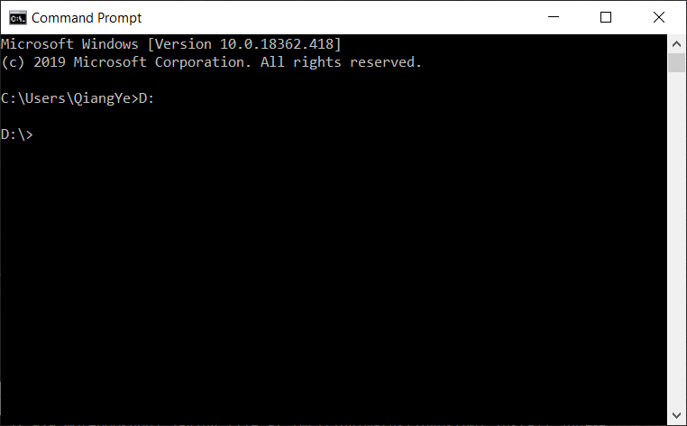
随后在提示光标后输入如下命令：
python -m venv venv
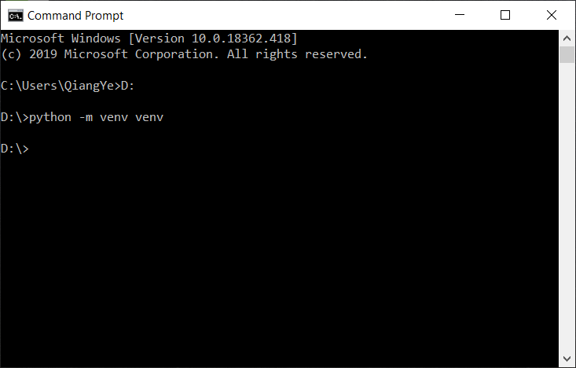
这行命令表示用python所带的venv功能（命令中的第一个venv）在当前目录下建立一个名为venv（命令中的第二个venv）的目录，并以该目录为根目录创建Python运行的虚拟环境。通常人们偏好使用venv这个目录名。顺利执行该命令后命令行提示工具不会有额外的提示，但目录D:\下已经多了一个名为venv的目录，并且其下也已经有了一些子目录和文件，表明虚拟环境已经创建好了。
虚拟环境创建好了之后会复制操作系统内安装的Python解释器的相关库。虚拟环境需要激活才能有效使用，它通常在被使用前通过命令激活，在使用结束后通过命令使之离开激活状态。在虚拟环境venv目录下有一个Script子目录，该子目录下有“activate.bat”和“deactivate.bat”两个文件，分别用于激活是失活虚拟环境。例如我们要激活刚刚创建的虚拟环境，可以在命令行提示工具下输入如下命令：
D:\venv\Scripts\activate.bat
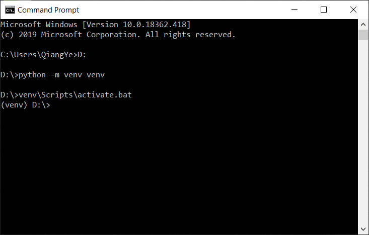
激活后，命令行提示工具的提示符前会多出字符串(venv)，表明当前处在虚拟环境下，在该环境下执行Python程序时仅调用当前虚拟环境下的Python解释器下的一些库。使用命令
pip list
查看当前已经安装的Python库，结果可能如下图所示：
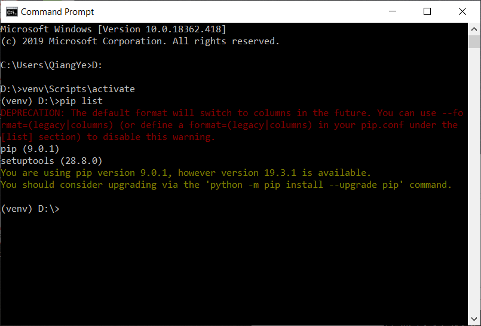
4. 安装Jupyter Notebook¶
通常当操作系统刚装好Python解释器，通常会带有两个库，一个是“pip”，另一个是“setuptools”，这两个库也会随着虚拟环境的创建而被复制至虚拟环境下。在安装Jupyter Notebook前，依次使用下面两条命令来更新这两个库：
python -m pip install --upgrade pip
python -m pip install --upgrade setuptools
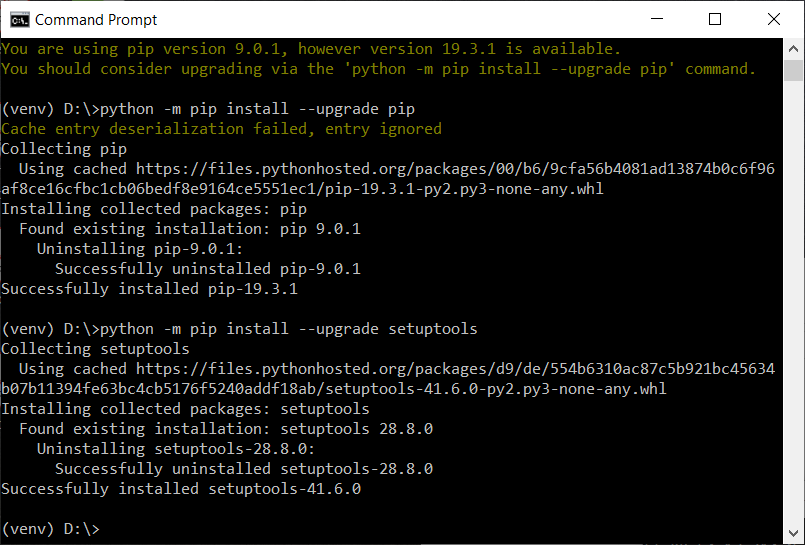
执行完上述命令后，使用下面的命令来安装“Jupyter Notebook”：
python -m pip install jupyterlab
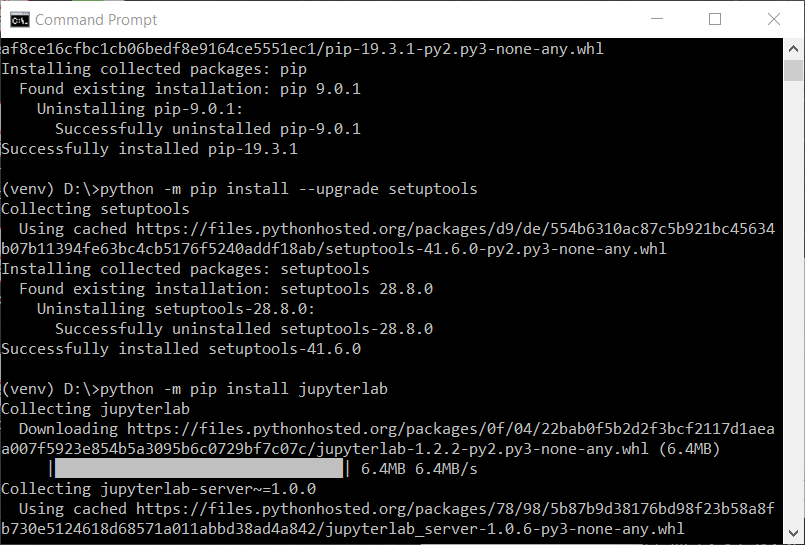
该过程由于需要安装较多的支持库，因此需要的时间略长些。一切顺利的情况下，Jupyter Notebook就安装好了，如下图所示：

在当前虚拟环境下执行下列命令：
jupyter notebook
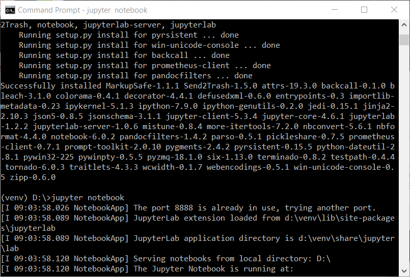
就启动Jupyter Notebook服务，并打开浏览器，进入Jupyter Notebook提供的基于网页的交互式编程环境了： 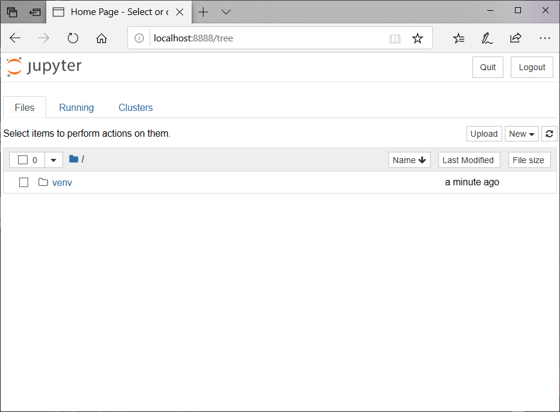
你看到的界面可能比上图显示的文件夹要多，这取决于你在命令行提示窗口输入“jupyter notebook”时的当前目录。 ### 5. 使用Jupyter Notebook进行Python交互式编程 使用Jupyter Notebook进行Python编程时，需要先建立一个notebook文件。在上图所示的右侧偏上方区域点击按钮“New”，在弹出的项目中选择“Python3”，如下图所示。
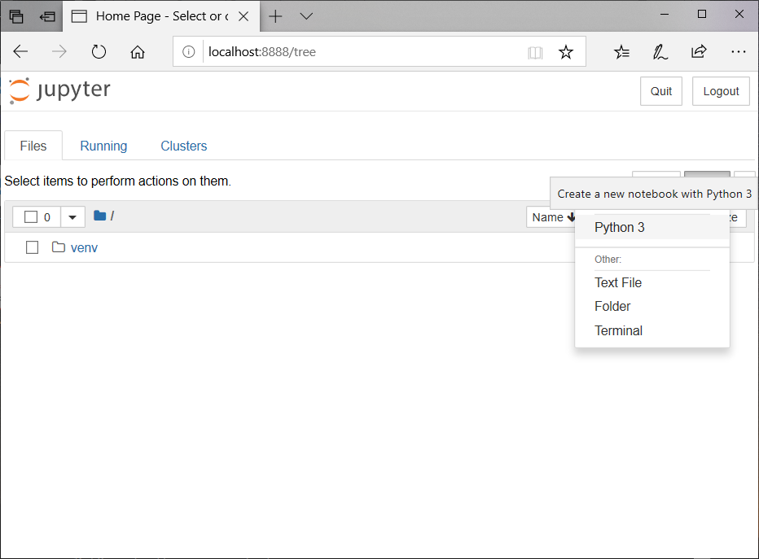
如此就建立了一个以Python3为解释器的交互式编程环境，如下图所示。图中的绿色文本框内可以用来编写Python程序代码，书写完毕后可以用过点击上方的“运行”(Run)按钮来执行本段代码，程序执行的结果会直接出现在该段代码的下方。
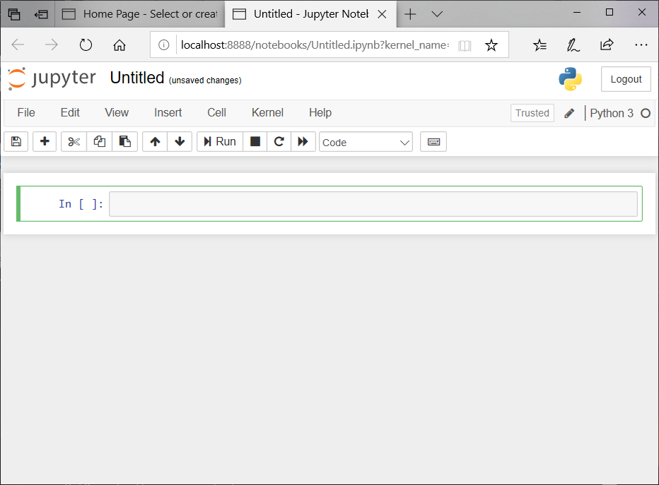
还可以通过点击上方工具栏上的“+”号来增加代码输入框，选中的输入框以特殊的边框颜色表示。也可以在选中某一个输入框后，切换工具栏上方的属性。常见的输入框的属性有“Code”、“Markdown”等，前者表明该输入框为代码输入框，多用于程序的代码部分，后者表明其实一段使用“Markdown”语法规则书写的文本内容，多用于书写一些解释性的内容。两者都可以执行。读者可以自己操作体会。此外，还可也在该窗口内重命名这个notebook文件，直接点击最上方的文件名（上图中显示的文件名为 Untitled），会弹出一个输入框，提示修改文件名，在这里可以输入你想要的文件名。
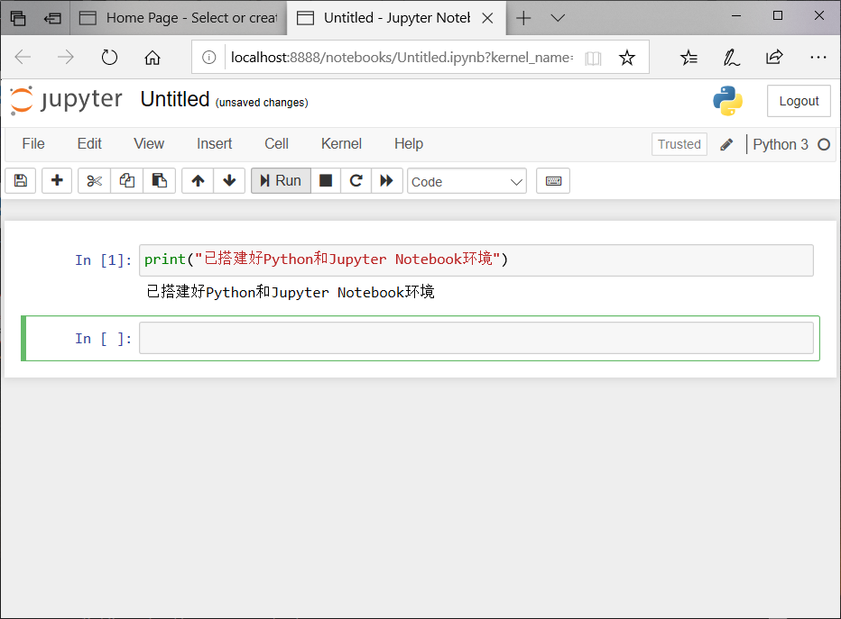
6. 退出Jupyter Notebook及虚拟环境¶
可以直接通过关闭浏览器页面来退出Jupyter Notebook的编辑运行网页。完毕网页后，应在当初通过输入“jupyter notebook”而启动noteboo的命令行提示窗口中按“Ctrl+C”组合键来终止jupyyter Notebook服务。如下图所示。 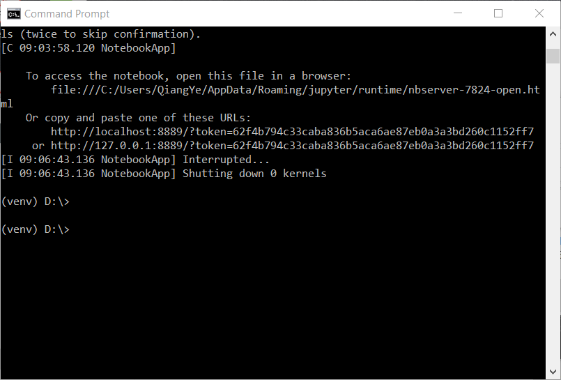
通过在命令行提示窗口内执行虚拟环境中路径为“venv:nbsphinx-math:Scripts\deactivate.bat”离开虚拟环境。如下图所示。
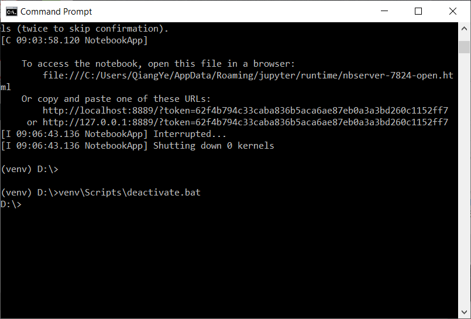
如此，就完全顺利退出了Windows操作系统下的虚拟Python编程环境。
[ ]: